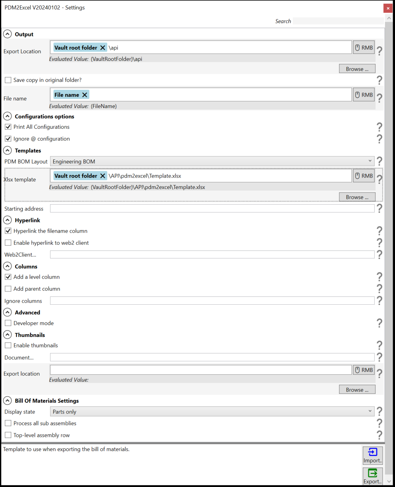

The Options setup tab allows you to define the characteristics of the BOM you would like to export.

Option
Description
Export Location
Specify a location where to export the xlsx BOM. Right-click on the RMB to insert dynamic variables into the path.
For example, to export your bill of materials to a location in the vault, you can use the vault root folder dynamic variable. The add-in will evaluate it to the actual path of the local vault view where the export operation will be executed. The list of dynamic variables are:
Vault root folder
Path to the local vault view root folder
File name without extension
Name of the assembly file without extension.
File name
Name of the assembly file including the extension (sldasm).
Configuration name
Name of the configuration if available.
@ configuration is evaluated to At.
Revision
PDM Revision of the assembly.
Version
PDM Version number of the assembly.
Date
The current date time in the following format yyyy-mm-dd.
Extension
Extension of the affected document.
User
Username of the session's user where the export process will be executed.
Launching user
Name of the user that launched this operation.
Please use this only if the add-in is configured to be used as a task.
PDM Variables
Value of the PDM Variable for the affected documents.
Please make sure the Variable name does not contain any illegal path characters.
Save copy in original folder?
If the checkbox is checked, the task will save the xlsx BOM in the folder of the original document.
File name
The name of the exported xlsx.
Configuration options
Print all configurations
Print all the configurations.
Ignore @ configuration
Ignores the @ configuration
Templates
PDM BOM Layout
The name of the BOM layout to use
Xlsx template
Use this if you want to include your company header in the exported bill of materials
Start address
The address where the add-in will add the BOM data.
By default, this is 1:1 (i.e. row one and column one or cell A1) but this will change depending on your template.
Hyperlink
Hyperlink the filename column
Adds a conisio link that directly opens the row's affected document in file explorer.
This does not apply to weldment rows.
Enable hyper to web2client
Adds a hyperlink to the filename that opens the row's associated document in the web2 client interface (PDM in the browser).
Web2client
Base URL of your web2client
Columns
Add level column
Add a level column.
Use this when the BOM display style is set to be indented.
Add parent column
Add the parent column to the bill of materials.
Ignore columns
Name of the columns to ignore.
Separate column names with ; (Column1;Column2;etc...).
Developer mode
Adds advanced error message for debugging.
Only use this when directed by tech support.
Thumbnails
You need the document key manager to be able to use this feature. Request from the ? button.
Export location
Specify the export location where you want to save the thumbnails as separate pngs.
Bill of Materials Settings
Display state
Intended
Parts only
Top level
Process all sub-assemblies
Process all sub-assemblies into separate bill of materials
Top-level assembly row
Add the top-level assembly as the 0th row.
Note
The Export and Import button allows you to save your settings and import them after upgrading. Only use them with task setup.